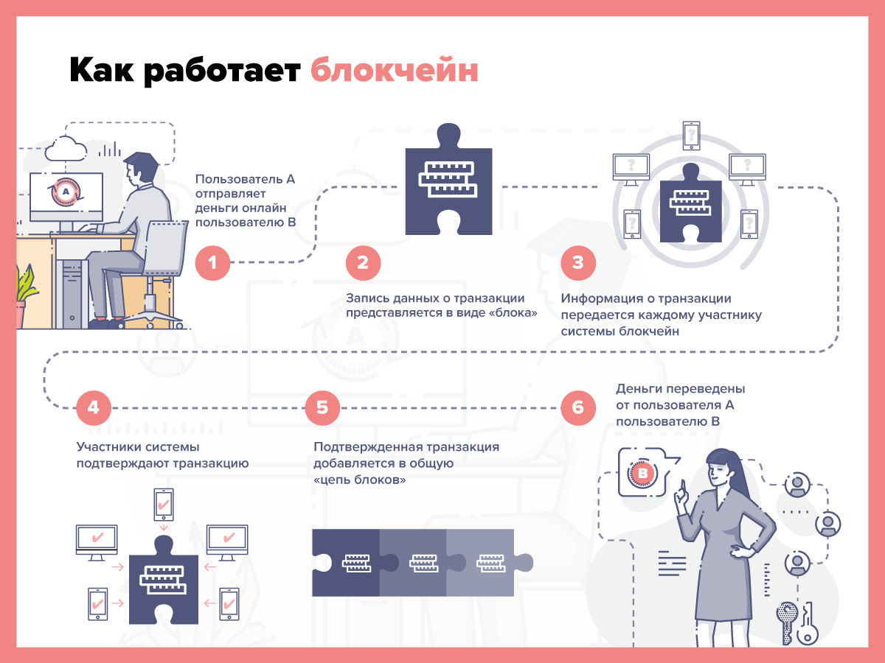

С чего началась криптовалюта?
Биткоин - тот, кто смог?
Криптовалюты — это не первая форма цифровых денег. Попытки создать цифровые валюты начались ещё на заре 90-х годов, но все эти изобретения не смогли конкурировать с электронными банковскими деньгами или сторонними системами, такими как PayPal.
Дэвид Шаум проложил путь для цифровой валюты, когда запустил DigiCash в 1989 году. Это была электронная сеть, используемая для отправки валюты анонимно. Спустя десять лет после банкротства DigiCash мы увидели подобные ему E-gold и Liberty Reserve, которые также обанкротились после уголовных обвинений. Вскоре сама идея начала казаться людям надуманной и нереализуемой.
Биткоин — детище Сатоши Накамото, но что за человек или группа людей скрывается за этим псевдонимом, до сих пор доподлинно не известно. Биткоин смог потому что помимо анонимности он стал обладать децентрализованностью, что означает полное остуствие влияния извне, а вся история транзакций абсолютно прозрачна и доступна любому пользователю.
Технология Биткоина
Что за слово такое? Блокчейн?
 Биткоин завершил преобразование, создав единый универсальный цифровой регистр, называемый блокчейном. Эта технология получила такое название, потому что похожа на цепь — внести в неё изменения можно только в конец блоков. Каждое новое дополнение содержит набор новых транзакций. Например, если Саша заплатит Юле за биткоин, эта транзакция появится в конце цепи. А в блоках до этого будет указано, что Саше заплатил Миша, а Мише Оля.
Блокчейн для биткоина, в отличие от книг бухгалтерского учёта, которые ведут традиционные финансовые учреждения, расположен на компьютерах по всему миру. Эти данные доступны для всех, у кого есть подключение к интернету. Майнеры, — владельцы компьютеров, на которых хранится информация блокчейна, — отвечают за обнаружение запросов транзакций от пользователей, их объединение, проверку и добавление в блокчейн в виде новых блоков.
Технология блокчейн может быть полезна не только для совершения транзакций. Практически сразу после появления биткоина, люди начали думать, как применить эту технологию в других сферах. Когда майнеры проверяют транзакции, они запускают небольшие программы, которые обрабатывают и предоставляют необходимые для транзакции данные. Но что, если запустить более сложные программы, например, программное обеспечение для социальных сетей? Или использовать блокчейн для предоставления данных для онлайн-форумов?